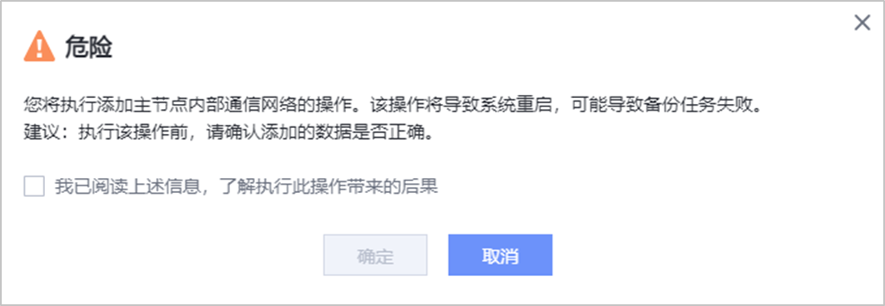

如果您需要使用集群高可用特性，请先参考本节操作，为主节点添加内部通信网络，用于备份集群各节点通信。
前提条件
- 配置集群高可用前，请确保已在DeviceManager界面为每个节点设置NTP自动同步，具体操作请参见《OceanProtect 备份一体机 1.5.0-1.6.0 管理员指南》中的“配置设备时间”章节。
- 主节点内部通信网络需要至少预留2个IP地址。
注意事项
- 添加主节点内部通信网络后，将导致系统重启，可能导致备份任务失败。
- 内部通信网络添加完成，且已添加成员节点后，内部通信网络不支持修改，请谨慎操作。
操作步骤
- 选择。
- 选择“备份集群”。
- 在主节点所在行右侧选择。
- 配置内部通信网络。
相关参数请参见表1。
表1 内部通信网络参数说明 参数
说明
IP地址类型
取值为“IPv4”或“IPv6”。
子网掩码
内部通信网络的IPv4地址的子网掩码。
说明：当“IP地址类型”为“IPv4”时，该参数才能显示。
前缀
内部通信网络的IPv6地址的前缀。
说明：当“IP地址类型”为“IPv6”时，该参数才能显示。
IP地址1
用户自定义的内部通信网络IP地址1，作为内部数据库的IP地址。请确保该地址未与其他IP地址重复，否则会导致IP网络冲突。
IP地址2
用户自定义的内部通信网络IP地址2，作为内部基础设施的IP地址。请确保该地址未与其他IP地址重复，否则会导致IP网络冲突。
网关
内部通信网络的网关。
是否使用VLAN
默认不勾选。勾选前请确认业务已配置VLAN，勾选后，配置的业务端口会应用于VLAN。
VLAN ID
选择“是否使用VLAN”后，需要输入该参数。该ID为用户配置VLAN的同时自定义的新增ID。
VLAN ID取值范围为1~4094；VLAN ID可以是一个或多个，多个ID间使用英文逗号分隔。
端口类型
可选“以太网端口”或“绑定端口”。
- 选择端口类型后，可在“可选端口”区域选择业务端口。用户可选中单个和多个端口来配置业务端口，在“已选端口”区域，可在需要移除的端口所在行单击
 图标，将单个端口从“已选端口”区域移除，或者单击“全部删除”移除“已选端口”区域的所有端口。
图标，将单个端口从“已选端口”区域移除，或者单击“全部删除”移除“已选端口”区域的所有端口。选择端口类型后，可做的选项如下：
- 端口选择：可选择“创建新端口”或“复用当前已配置端口”。
- 共享端口（可选）：当“端口类型”选择“绑定端口”时存在该选项。打开“共享端口”开关，可以减少需要端口的数量，但是内部通信网络可靠性会有所降低。
- （可选）在高级配置区域，可选择“配置路由”，为内部通信网络配置路由。单击“新增”选项，新增对应的路由。可选路由类型为“网段路由”、“主机路由”和“默认路由”。

如果逻辑端口已配置网关，则不支持添加默认路由。
- 单击“确定”。
- 系统弹出“危险”提示框，确认提示信息无误后，勾选“我已阅读上述信息，了解执行此操作带来的后果”，单击“确定”。

如果您需要修改或删除已添加的内部通信网络，请在主节点所在行右侧单击或进行操作。后续添加了成员节点后，无法修改或删除内部通信网络。